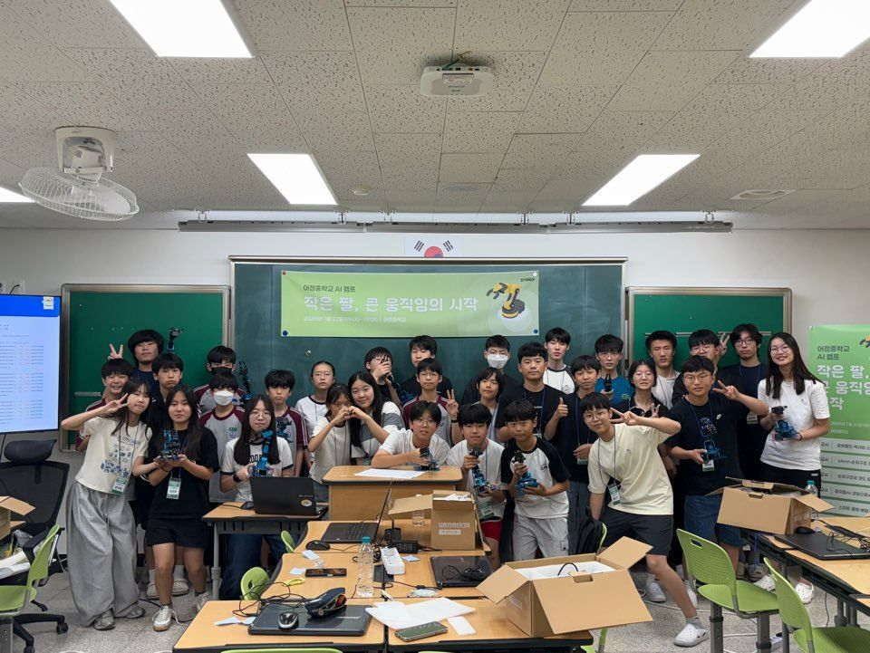
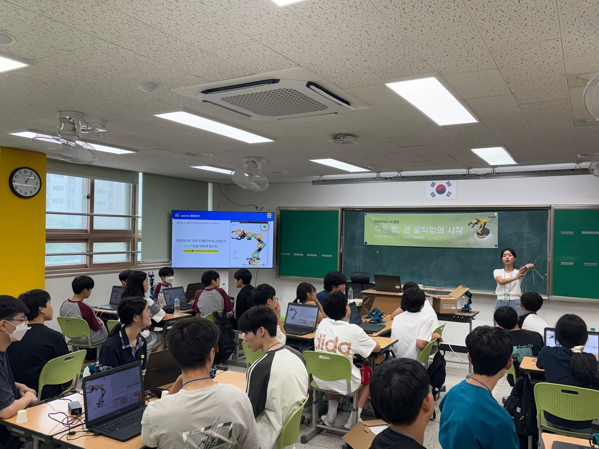
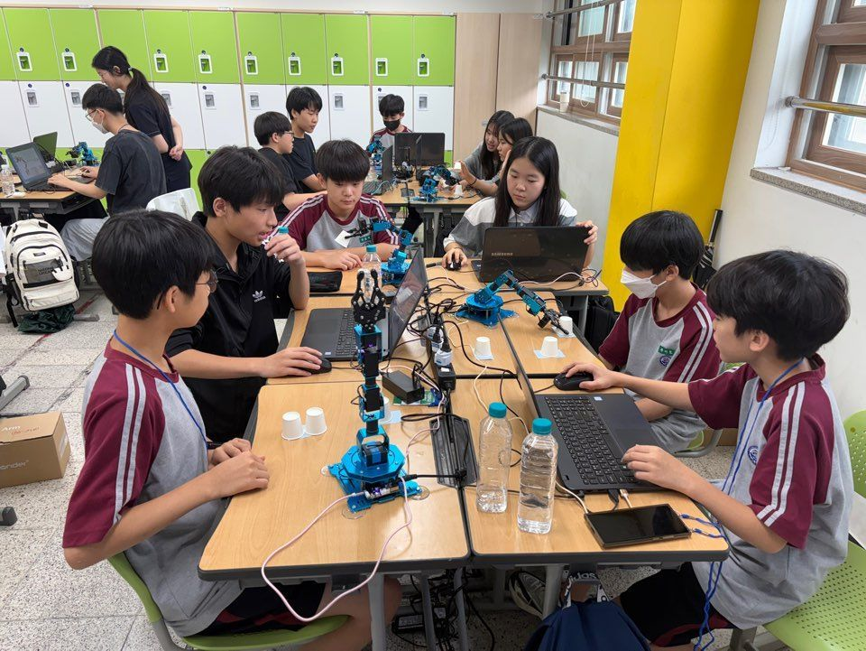
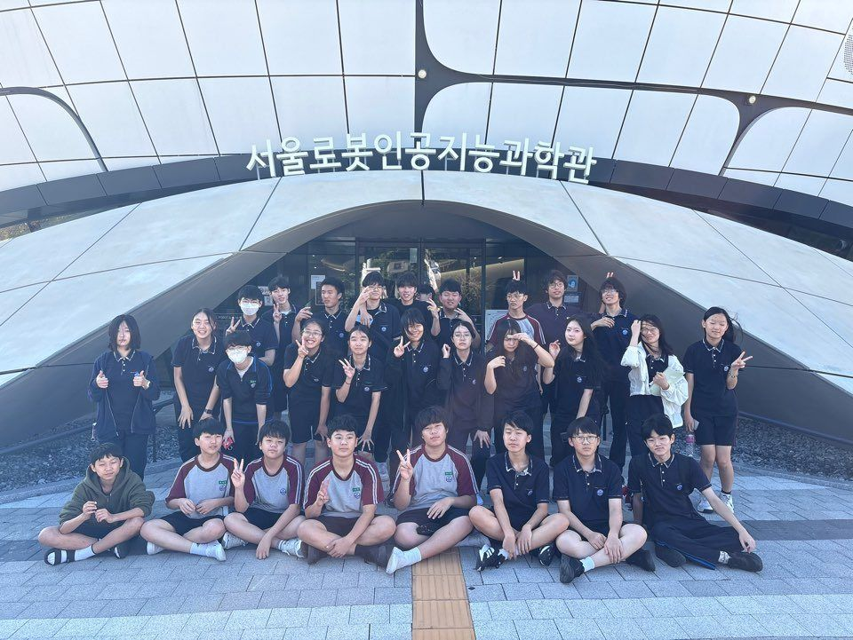
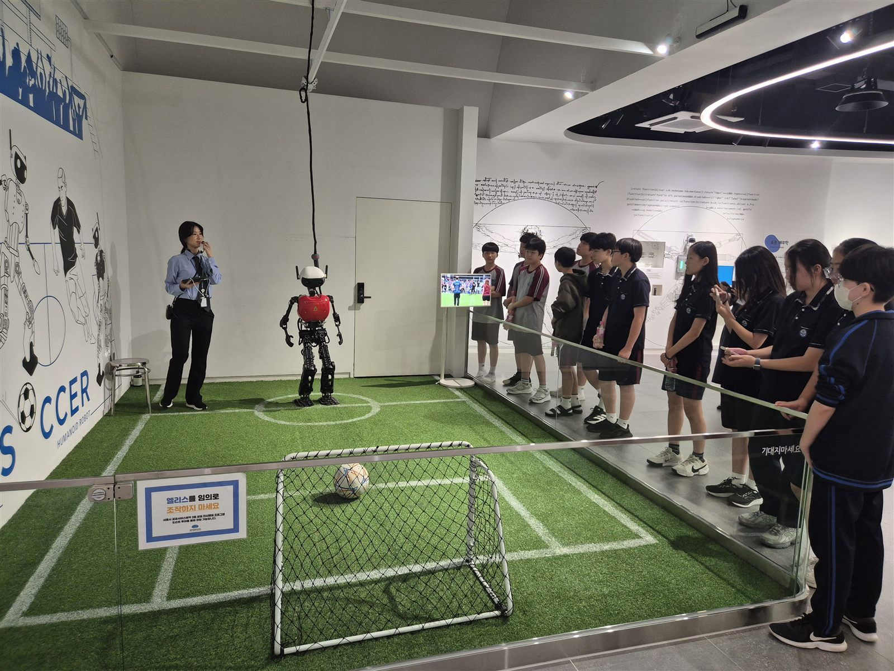
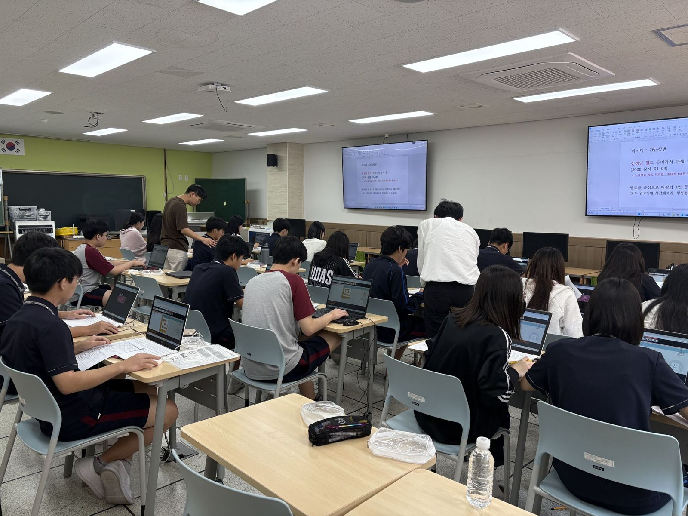
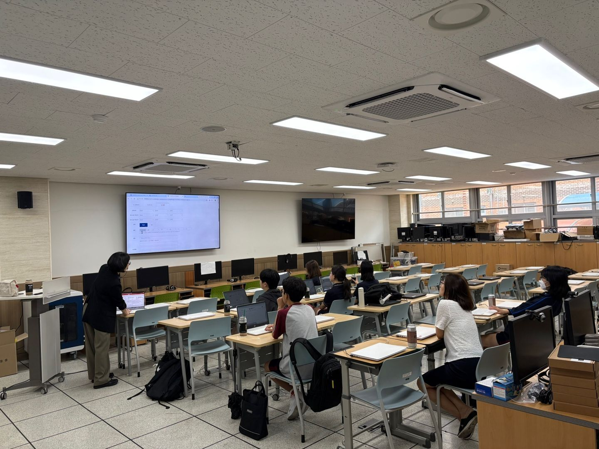
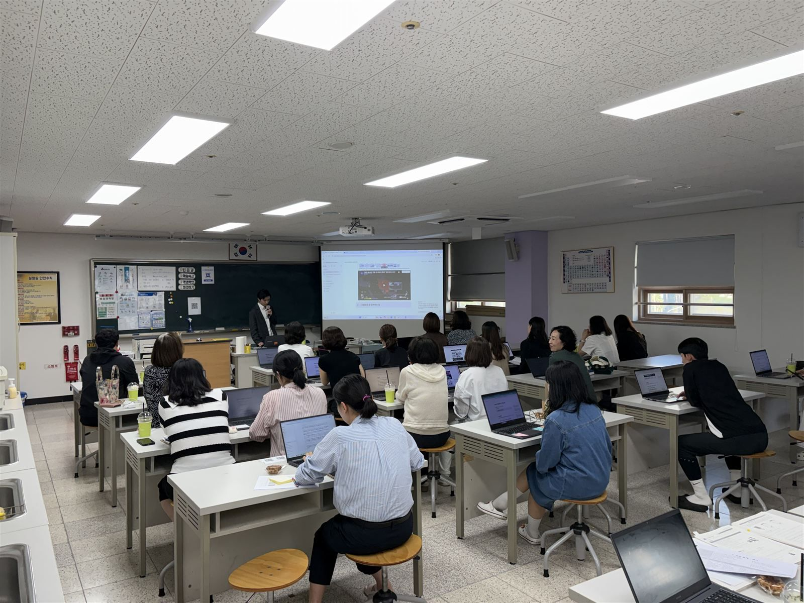
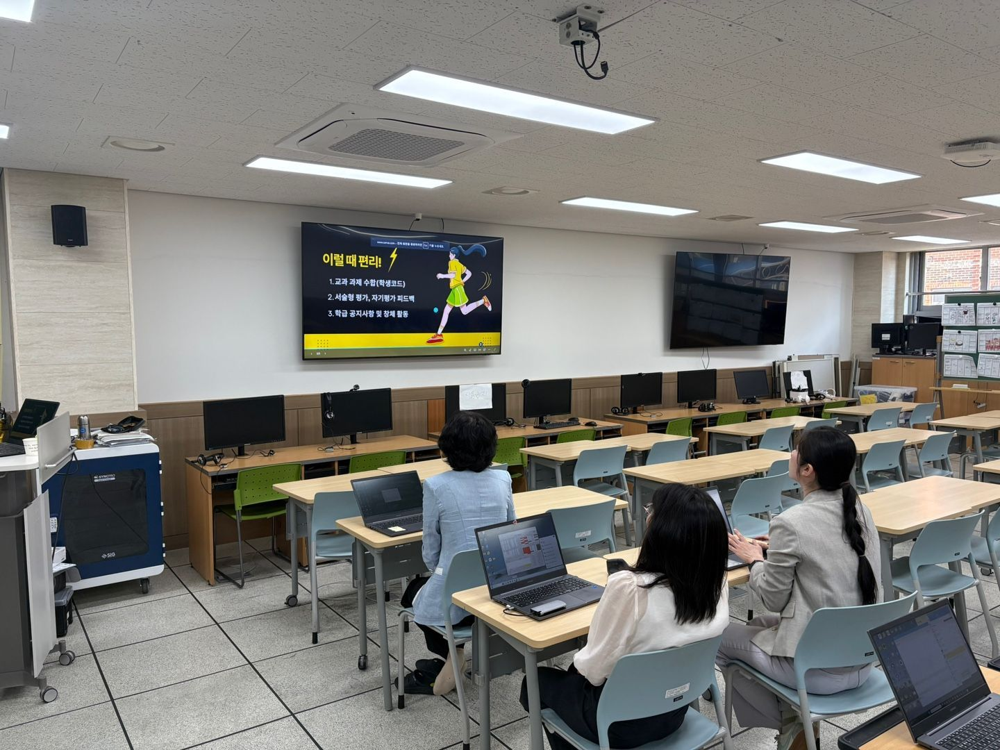
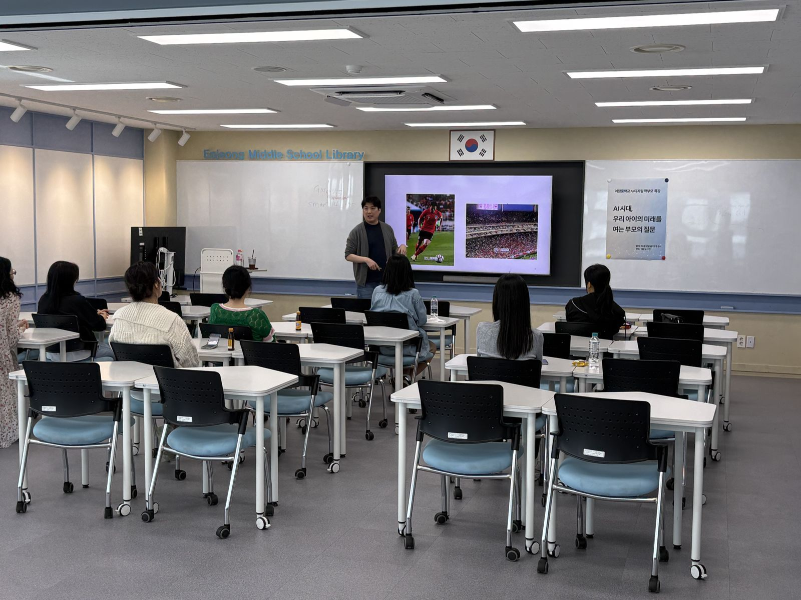

A · AI Digital
A
도구는 스마트하게
학생이 중심이 되어
체험하고 · 만들고 · 기록하다
AI·디지털 활용 선도학교 · 경기형 AI·디지털역량 성장학교 · 디지털튜터 사업이 하나로 연결되어
학생, 교사, 학부모가 함께 성장한 1년입니다.
01 · AI CAMP
AI 캠프 · 작은 팔, 큰 움직임의 시작
로봇팔을 직접 조작하고, 생성형 AI로 Python 코드를 만들어 스마트 물류 배달 챌린지에 도전했습니다.



02 · AI JOURNEY
AI 탐구 여행 · 보고, 묻고, 기록하다
머신러닝, AI 예술, AI 윤리, 로봇을 체험하고 한 사람 한 사람이 탐구 보고서를 작성했습니다.




"데이터가 균형 있을수록 AI가 정확해진다는 걸 알았다."
"로봇을 다룰 수 있는 직업을 가져야겠다는 생각을 하게 되었다." - 학생 소감
03 · CLASS & CLUB
수업과 동아리에서 만나는 AI
Class
맞춤형 개별화 수업
에듀테크·생성형 AI 활용, 하이러닝 수업과 AI 서·논술형 평가, 디지털튜터 협력수업으로 개별 지도
AI Club
인공지능 연구동아리
교육 공공데이터 AI 활용대회, 개인정보보호 사례 공모전 도전, AI 기술 조사 포스터 제작
Newspaper
신문반 · 학생 기자단
AI 캠프·탐구 여행을 직접 취재해 기사로 알리고, 경기도교육청미디어교육센터와 연계한 기자 교육


04 · TEACHER & PARENT
함께 성장하는 어른들
- AI 교사 역량 강화 연수9월 30일 · 기초반 / 심화반(AI 에이전트)
- 에듀테크 연구동아리바이브 코딩, AI로 PPT 만들기, 웹페이지 만들기
- 상반기 성과공유회IB·세계시민교육과 연계하여 운영
- AI·디지털 학부모 특강10월 2일(금) · AI 시대, 우리 아이의 미래를 여는 부모의 질문


